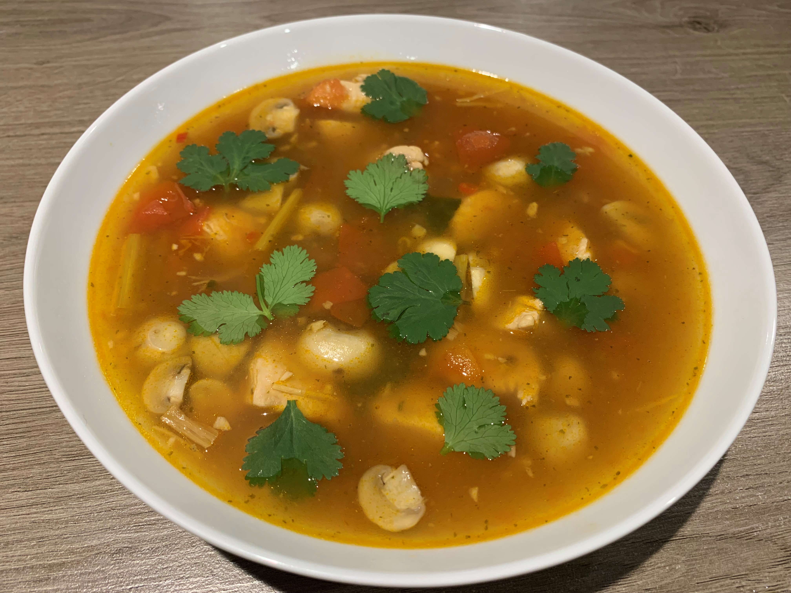

Tom Kha originated in Thailand, and is one of the countries most famous dishes. This flavoursome soup traditionally consists of:
These ingredients combine to create a wonderfully aromatic dish which is bursting with flavour, as well as being highly nutritious.
Below, I will detail the ingredients and method for making my take on Tom Kha Gai. I removed the Coconut Milk to give it a thinner, less creamy consistency but this is entirely based on preference. Most ingredients will be available at your local supermarket, however, some may be difficult to find.
Below, is a picture of my finished Tom Kha. As you can see, my version is quite a clear soup. Not using coconut milk allowed for this thinner consistency which I chose due simply to preference. The lime leaves especially add a huge flavour and fragrance to this dish, making it a very pleasant experience to cook as well as to eat. I would highly recommend this dish due simply to it's bold flavours.
